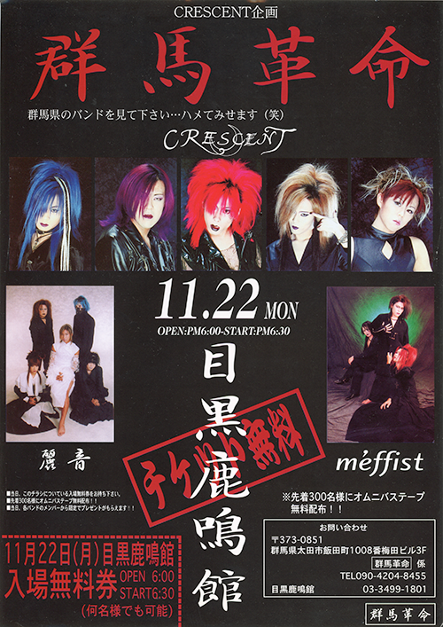
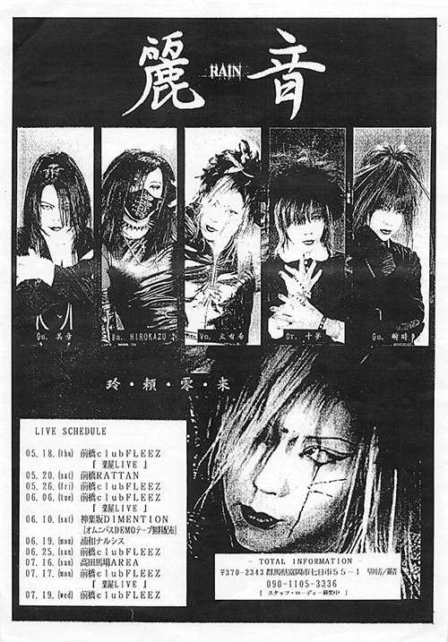
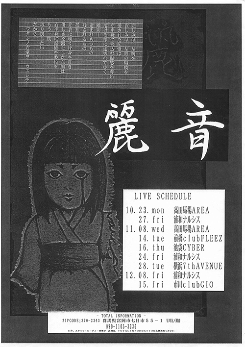
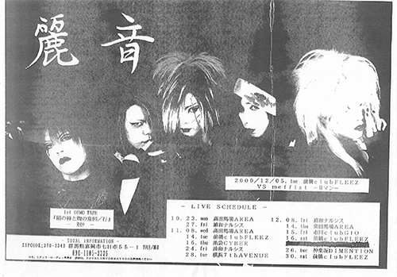
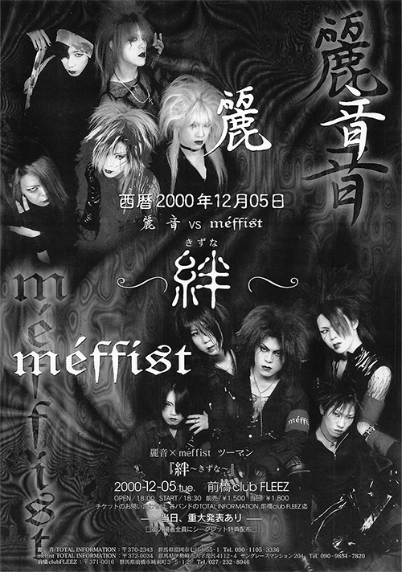
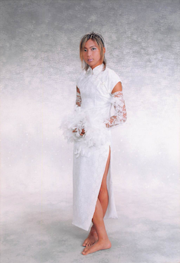
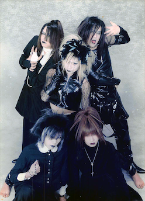
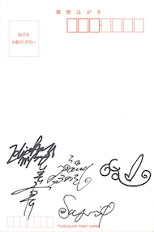
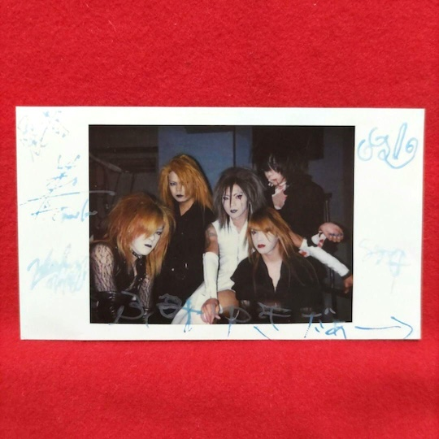

麗音の印刷物
公演告知
麗音 初の折り込みチラシ
西暦1999年11月22日 群馬革命

西暦2000年5月7日 BIRTHDAY LEVEL1
西暦2000年5月~7月 LIVE告知

西暦200年7月~10月 TOUR『呪縛 ~ジュバク~』
西暦2000年10月~12月 LIVE告知その1

西暦2000年10月~12月 LIVE告知その2

西暦2000年12月5日 麗音 VS méffistツーマンLIVE『絆~きずな~』

2001年1月7日 麗音解散ワンマン『永遠~えいえん~』
生写真
文有希単独アーティスト写真
麗音アーティスト写真2L判サイズ
麗音アーティスト写真その一
麗音アーティスト写真その二
麗音メンバーサイン (生写真の裏)
ポストカード
麗音ポストカード呪縛
麗音メンバーサイン (ポストカードの裏)
ステッカー
麗音ステッカー
西暦2001年01月07日 前橋 club FLEEZ 麗音 ファイナル・ワンマン『永遠~えいえん~』
ポスター
西暦2000年10月13日 TOUR 「呪縛 ~ジュバク~」 FINAL EVENT 「隷 ~しもべ~」 配布ポスター
その他
メルカリに出品されていたサイン入りチェキ
バンド紹介用フライヤー
LIVEアンケート
西暦1999年10月 楽屋ライブ
麗音 解散ワンマン『永遠~えいえん~』打ち上げ会場 案内
TOPへ戻る


 西暦2000年10月13日 TOUR 「呪縛 ~ジュバク~」 FINAL EVENT 「隷 ~しもべ~」 配布ポスター
西暦2000年10月13日 TOUR 「呪縛 ~ジュバク~」 FINAL EVENT 「隷 ~しもべ~」 配布ポスター


 西暦2000年10月13日 TOUR 「呪縛 ~ジュバク~」 FINAL EVENT 「隷 ~しもべ~」 配布ポスター
西暦2000年10月13日 TOUR 「呪縛 ~ジュバク~」 FINAL EVENT 「隷 ~しもべ~」 配布ポスター 麗音アーティスト写真その一
麗音アーティスト写真その一 麗音アーティスト写真その二
麗音アーティスト写真その二 麗音ポストカード呪縛
麗音ポストカード呪縛 麗音ステッカー
麗音ステッカー 西暦2001年01月07日 前橋 club FLEEZ 麗音 ファイナル・ワンマン『永遠~えいえん~』
西暦2001年01月07日 前橋 club FLEEZ 麗音 ファイナル・ワンマン『永遠~えいえん~』{kind=link}
{kind=link}
{kind=link}
{kind=link}
{kind=link}
{kind=link}
{kind=link}
{kind=link}
{kind=link}
{kind=link}
{kind=link}
{kind=link}
{kind=link}
{kind=link}